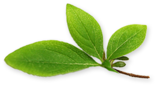

NATURAL PURE COSMETIC
내추럴 리치 클렌징 폼
Natural Rich Cleansing Foam / 150ml
4.4천연유래 성분으로 피부 노폐물과 미세 먼지를 깨끗하게 지워주는 부드러운 클렌징 폼
- 브로컬리 새싹 추출물이 보습을 제공하며 카모마일 추출물이 피부 수딩을 돕습니다.
- 보습력이 뛰어난 올리브 오일을 함유해 세안 중 피부 수분 손실을 방지하고
세안 후 피부 당기는 느낌을 완화 시켜줍니다.
- 우뭇가사리에서 추출한 해초 추출 성분을 함유해 피부 노폐물을 흡착해서 청정한 피부로 가꿔줍니다.
슈퍼 스프라우트 세럼
Super Sprout Serum / 50ml
 4.6
4.6
슈퍼씨드의 풍부한 발아생명력이 만드는 항산화 효과로 어리고 생기있는 피부를 되찾아주는 안티에이징 세럼
'피토-스프라움™'을 함유한 세럼이 약해지고 힘 잃은 피부를 케어하여 탄탄하고 생기있는 피부로 가꾸어 줍니다.
피토-스프라움™ (Phyto-Sproum™)
발아 순간의 생명에너지와 농축 된 영양을 연구해 온 프리메라의 독자적 성분으로,
피부를 건강하고 생기있게 가꾸어 주는 슈퍼블랙씨드의 효능을 고스란히 담은 활성 발아 성분입니다.
피토-스프라움™의 5가지 효능
투명도 케어, 피부 리듬 강화, 피부 장벽 강화, 보습 작용, 피부 결 케어
되살아나는 3가지 피부 변화
피토-스프라움™을 가득 담아 톤, 탄력, 촉촉함이 되살아나는 피부로 완성시켜 줍니다.
*100% 천연 유래 처방. 자연으로부터 온 성분들이 피부에 부담없이 부드럽고 편안하게 흡수됩니다.
알파인 베리 워터리 크림
Alpine Berry Watery Cream / 50ml
4.4알파인 베리 새싹 추출물과 알로에 베라 잎 추출물이 피부에 풍부한 수분을 공급하며,
비타민C, 케라티노이드 성분을 함유한 파파야 열매 추출물이 피부에 생기를 부여하는 크림
- 알파인 스트로베리는 북유럽 및 북 아메리카 등의 고지에 자생하며, 춥고 척박한 환경에서도
싹을 틔우는 강한 생명력을 자랑합니다.그 잎은 허브 차로도 애용되며, 비타민C를 함유하여
피부에 영양소를 전달하여 항산화 작용으로 피부를 보호합니다.
- 알로에 베라 잎 추출물은 기원전 16세기 전부터 고대민간요법에 사용될 정도로 인체의 피부에 무해한 식물로
수분공급 능력이 뛰어나 피부를 건강하게 유지시켜 줍니다.
- 파파야 열매는 인도의 열대과일로, 열매내 함휴하고 있는 비타민 C, 케라티노이드 성분이
항산화 작용을 도와주어 항상 생기있는 피부로 가꾸어 줍니다.
스킨 릴리프 데일리 선 쿠션 SPF33 PA++
Skin Relief Daily Sun Cushion SPF33 PA++ / 15g
4.2100% 무기 자외선 차단으로 자외선과 외부 유해환경으로부터 민감해진 피부를 보호하는 저자극 선 쿠션
- 쿠션 타입 자외선 차단제로 사용 및 덧바름이 간편합니다.
- 무기 자외선 차단제를 사용하여, 자외선과 외부 유해환경으로부터 민감해진 피부를 지켜주는 저자극 선 쿠션입니다.
- 실리카 파우더 함유로 번들거림 없이 보송보송하게 피부에 흡수되며,
자연스러운 피부톤 보정으로 생기있는 피부를 연출해줍니다.
- 발아 해바라기 새싹 추출물이 함유되어 피부 저항력을 강화해주고, 외부 유해환경으로부터 피부를 보호해줍니다.
- 발아 검은깨 추출물이 자외선으로 인해 지친 피부에 수분을 공급해 진정시켜주며,
발아 검은 콩 추출물의 항산화 효능이 외부 스트레스로부터 피부를 보호합니다.
페이셜 마일드 필링
Facial Mild Peeling / 150ml
4.4부드러운 각질 관리로 피부결을 개선해주는 필링
- 피부 표면의 노폐물과 묵은 각질을 흡착하여 부드럽게 제거합니다.
- 각질 제거를 통해 피부 표면을 매끄럽게 해주어 고운 피부결로 가꿔줍니다.
- 각질 제거 후, 바이오 폴리머 필름이 피부에 작용해 유연한 막을 형성하여 피부를 보호합니다.

미라클 씨드 에센스 (리미티드 에디션)
Miracle Seed Essence / 150ml
4.4발아 순간의 모든 에너지를 담아 피부를 투명하고 윤기 나게 가꿔주는 기적의 씨앗 에센스
강인한 생명력의 연꽃 씨가 가진 3가지 비밀
피부결 Texture
리놀렌산과 천연보습인자의 구성성분인 아미노산이 풍부하다고 알려져 있는 연꽃 씨가 피부장벽 기능을 강화시키며,
피부에 충분한 수분을 공급하고 건조한 외부환경으로부터 보호하며 피부결을 매끈하고 촉촉하게 가꾸어줍니다.
피부톤 Tone
연꽃씨에 풍부한 플라보노이드와 폴리페놀 성분의 항산화력으로
피부에 유해한 활성산소생성을 억제하여 피부를 맑게 정화해줍니다.
투명도 Transparency
연꽃씨는 각종 환경오염과 스트레스, 노화로 인한 트러블을 완화시켜주며
피부를 탄탄하게 케어하여 건강하고 투명한 피부로 가꾸어줍니다.
베이비 선 쿠션 SPF32 PA++ (리미티드 에디션)
Baby Sun Cushion SPF32 PA++ (Limited Edition) / 15g
4.5
햇빛을 받으면 컬러가 변하는 베이비 요술 선쿠션
- 아이에게 간편하게 발라줄 수 있고, 아이들에게도 즐거운 선케어 타임을 제공하는 쿠션 타입의 선크림입니다.
- 연약한 유아 피부를 생각하여 자외선을 반사시키는 무기자외선 차단제를 사용하였습니다.
실크처럼 균일하고 매끄러운 자외선 차단막을 형성하여 유아 피부를 지켜줍니다.
- 아티초크 잎 추출물이 자외선으로부터 지친 유아 피부에 보습을 부여하여 진정 시켜줍니다.
아로마 바디 워시 프레시-업 & 킵-캅
Aroma Body Wash Fresh-Up & Keep-Calm / 240ml
5.0
천연 에센셜 오일 블렌딩의 부드럽고 그윽한 향과 함께 오일 보습 성분 함유로
매끄럽고 촉촉하게 세정해 주는 아로마 바디 워시
- 레몬그라스잎 오일향, 센티드제라늄꽃 오일향, 버가못열매 오일향 등 천연 100% 에센셜 오일향을 함유해
갓 짜낸 신선한 레몬즙이 입 안 가득 퍼지는 듯한 풍부한 아로마 블렌딩을 느낄 수 있습니다.
- 세다우드 오일향, 쁘띠그랑 오일향, 오렌지필 오일향 등 천연 100% 에센셜 오일향을 함유해
촉촉히 이슬을 머금은 꽃나무 잎 향을 맡는 듯한 풍부한 아로마 블렌딩을 느낄 수 있습니다.
- 오일 보습 성분이 함유되어 부드러운 세정을 도우며 피부 보습막을 보호하여
촉촉하고 윤기나는 바디로 케어해줍니다.
- 빌베리싹 추출물이 함유되어 건조하고 거칠어지기 쉬운 피부에 활력을 부여합니다.